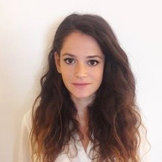
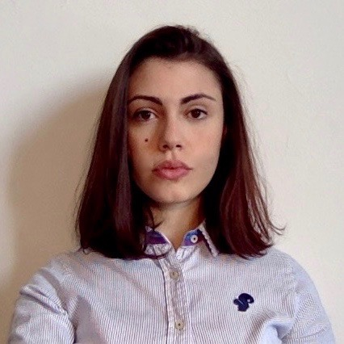
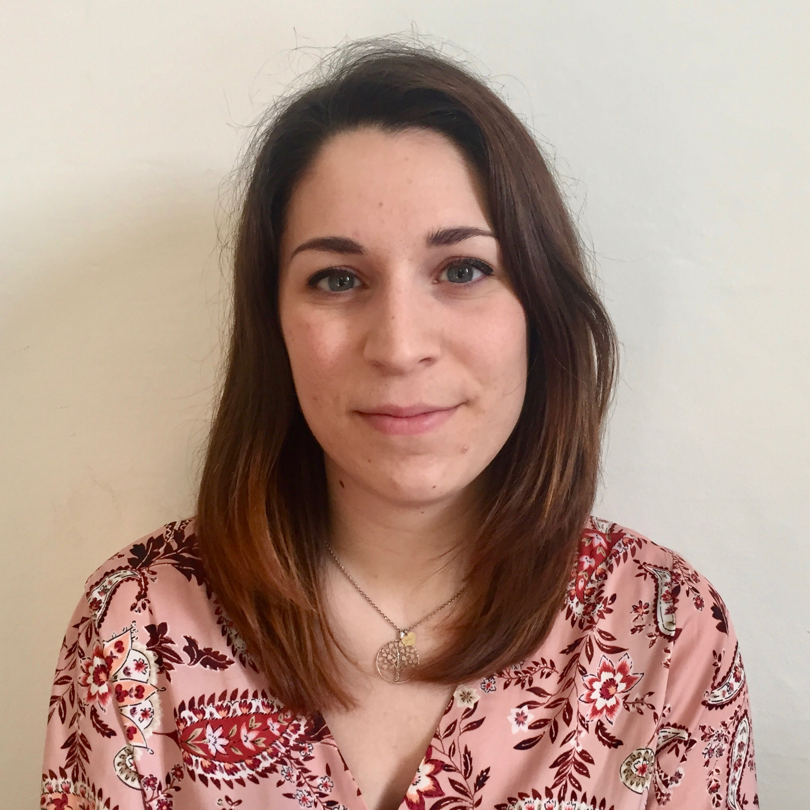

<div  class="container-team">           
   <section> 
    <div id="text-about">
      <h2 id="title-team">
        Team
      </h2>
      
      <div class="description-team">
		<p>This project has been implemented by Sara Armaroli, Lucia Giagnolini and Michela Parma for &#34Knowledge organization an digital methods in the cultural heritage domain&#34; examinatination, University of Bologna.</p>
     
  </div>
  </section> 
  
   <section>
    <div class="container-fluid pt-5"> 
   
              <div class="card-deck"> 
              	<!--ROW 1-->
                    
                <!--Sara-->
                <div class="card"> 
                  
                      <div class="card-body">
                      <h5 class="card-title-sara">Sara Armaroli</h5>
                        <p class="card-text"> I&apos;ve graduated in Philosophy at the University of Bologna and now I&apos;m attending the two-years master in the Digital Humanities and Digital Knowledge at Alma Mater Studiorum-University of Bologna.</p>
                      </div>
                </div>
                         
                <!--Lucia-->
                <div class="card">
                  
                    <div class="card-body">
                      <h5 class="card-title-lucia">Lucia Giagnolini</h5>
                      <p class="card-text">
                        I&apos;ve graduated in History at the University of Bologna and now I&apos;m attending the two-years master in Digital Humanities and Digital Knowledge at Alma Mater Studiorum – University of Bologna.</p>
                    </div>
                </div>
                             
                <!--Michela-->
                <div class="card">
                  
                    <div class="card-body">
                      <h5 class="card-title-michela">Michela Parma</h5>
                      <p class="card-text">
                        I&apos;ve graduated in History at the University of Venice and now I&apos;m attending the two-years master in Digital Humanities and Digital Knowledge at Alma Mater Studiorum – University of Bologna.</p>
                    </div>
                </div>
              
              </div>
          
        
          </div>
           </section>
</div>
    
    